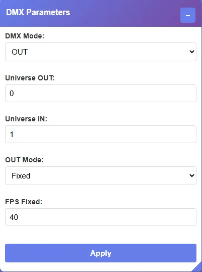
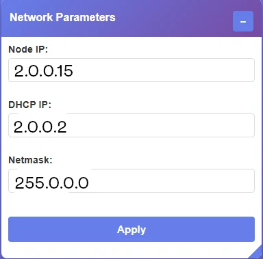
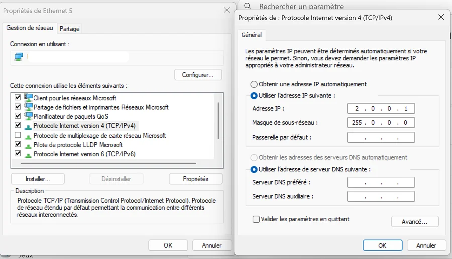
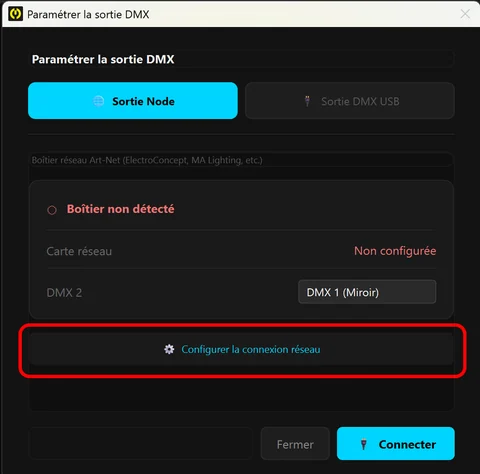

Art-Net node
WindowsPlug in the two cables
One RJ45 cable straight between the PC and the node (no switch, no Wi-Fi), and the power : square USB-B or USB-C depending on the model. Check that the LED on the box lights up.
Set up the node in its utility
For ElectroConcept nodes, with the box plugged in and powered, open dmx-tools.electroconcept.fr and enter :
- DMX Parameters
- DMX Mode: OUT · Universe OUT: 0 · Universe IN: 1 · OUT Mode: Fixed · FPS Fixed: 40
- Network Parameters
- Node IP: 2.0.0.15 · DHCP IP: 2.0.0.2 · Netmask: 255.0.0.0
Confirm, then unplug and replug the USB : the node restarts on its new address. It ships set to 2.0.0.1, and 2.0.0.15 is the address MyStrow targets by default — stick to it and you will have nothing to enter in the software.
On another node (ENTTEC ODE, DMXKing eDMX…), the utility changes but the settings are the same : Art-Net protocol, output set to OUT, universe 0, IP 2.0.0.15 / netmask 255.0.0.0.


Set the PC's network adapter to 2.0.0.1
In MyStrow : Connection ▸ 🌐 DMX Output ▸ ⚙️ Configure output, tab 🌐 Node output, button ⚙️ Configure the network connection. The wizard checks the cables, lists the Ethernet adapters, and the Configure automatically ✓ button applies 2.0.0.1 / 255.0.0.0 to the one you point at.
Automatic configuration requires administrator rights. If it fails, the wizard falls back to the manual page : button 🔑 Restart as administrator, or set it by hand — right-click the adapter ▸ Properties ▸ TCP/IPv4 ▸ Properties ▸ “Use the following IP address” ▸ 2.0.0.1, netmask 255.0.0.0, gateway empty.


Allow MyStrow through the firewall
On the first transmission, Windows shows an authorisation prompt : tick Private networks and confirm. Art-Net goes out over UDP on port 6454 ; if you refuse, the prompt never comes back and the node stays silent.
Connect, then route the outputs
Tab 🌐 Node output : the status turns green as soon as the box answers, then click 🔌 Connect. In the Output routingtable, say which universe goes to which physical socket (see Universes & routing).
Wi-Fi : avoid it. Art-Net copes badly with packet loss and the variable latency of a wireless network — the lights “stutter”. Wired for the node, Wi-Fi for the control tablet.